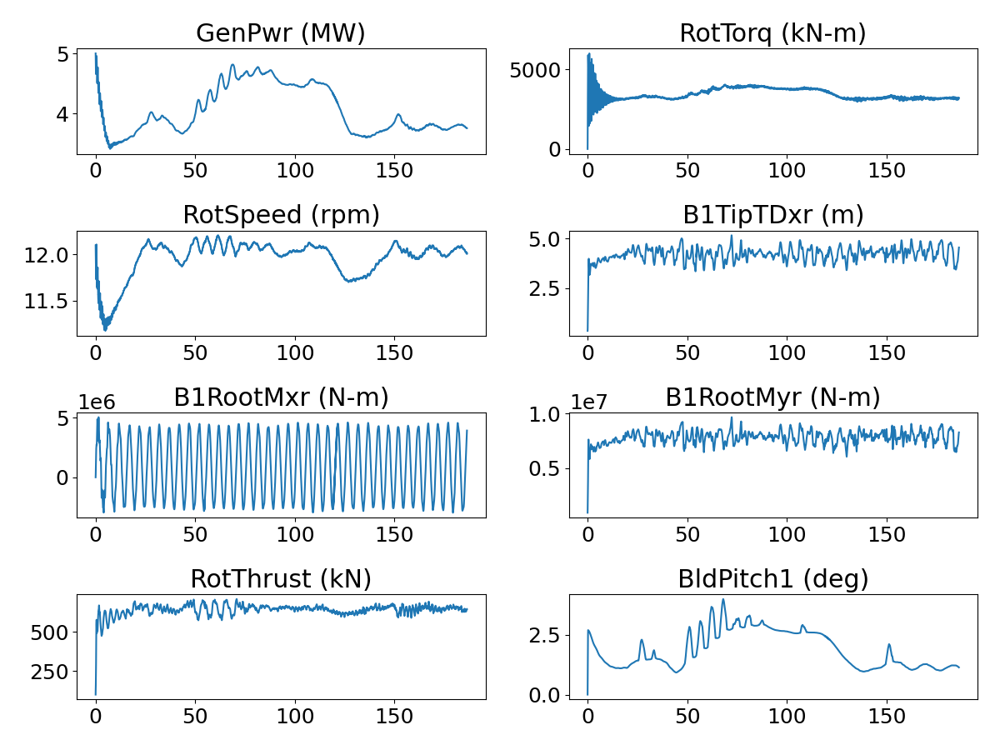

NREL 5MW Rotor in Atmospheric Boundary Layer With OpenFAST/BeamDyn Fluid Structure Interaction
This benchmark contains a geometry and boundary-layer resolved model of the NREL 5MW reference turbine [1] in a developed near-neutral convective atmospheric boundary layer with a mean hub-height streamwise velocity of 11.4m/s.
Hub-height: 90m
Blade Radius: 63m
Rated Power: 5 MW
Type: Upwind 3 Blade
Simulation dt: 0.003443526170799 s
OpenFAST dt: 0.0008608815426997245 s
Note on run-time: Current results are for approximately 180s simulation time, but a minimum of 300s will be posted as results become available.
Note on turbine controller: This case will be re-run in Q3 as a result of a small bug in the controller. If interested in running this benchmark, please contact the authors for up-to-date scheduling
Simulation Setup
ExaWind driver SHA: cba5259fc43ddeca67329630d3c84faad90e91bb
Nalu-Wind SHA: b9e4ae654b646ecd0501dd6391dc7537239c82db
AMR-Wind SHA: 091b07fa3840af98925792290fb8788696290a5e
OpenFAST 4.0.2 SHA: fc1110183bcc87b16d93129edabdce6d30e3a497
Freestream Conditions
A near-neutral convective boundary layer precursor was run to feed the domain for this case. Full details are posted here: Convective ABL for NREL5MW
10 minute flow statistics:
Hub-height streamwise velocity: 11.4 m/s
Hub-height flow direction: ~240.0 degrees

CFD Mesh

Total number of cells: 155,363,046
The near-body (Nalu-Wind) mesh was created using a proprietary surface mesher, pyHyp, and Pointwise. Three blades are split at the hub, and an unconnected tower is included.
Hexahedral cells
Cell count: 13,436,646
Off-body (AMR-Wind) mesh was generated using the built-in capability of AMR-Wind. Off-body mesh information is summarized below
Mesh topology: structured hex with nested refinements
Domain in x= 0 to 5000m, y=0m to 5000m, z=0m to 1000m
Initial grid size: 10m
Finest cell size: 0.625m with 4 AMR levels
Cell count: 141,926,400
Results
Timeseries results from OpenFAST
The plots below show timeseries of some key quantities as reported by OpenFAST (which in this simulation is acting as the structural and controller model).

Mean values over time period: 60s to 180s
variable |
value |
|---|---|
Generator Power |
4165.49 kW |
Rotor Aero Torque |
3509.12 kN-m |
Rotor Speed |
12.0 rpm |
Rotor Thrust |
643.58 kN |
B1 Root Flap Moment (x) |
8.300869e+05 N-m |
B1 Root Edge Moment (y) |
7.869930e+06 N-m |
B1 Tip Deflection x-direction |
4.24 m |
B1 Pitch |
2.07 degrees |
Simulation Timings
This benchmark was run at Sandia National Laboratories on a machine comprised of 112 Intel® Xeon® Platinum 8480+ CPU cores per node.
Processor Decomposition:
Nalu-Wind: 672 ranks
AMR-Wind: 4928 ranks
Timings:
Mean wall-clock time per timestep for entire simulation: 17.75s
Mean wall-clock time per timestep per cell 1.142e-07s
Quick Exawind Simulation Guide
Step 0: Run the ABL precursor in AMR-Wind
This simulation is driven by an ABL precursor, run in AMR-Wind, with recorded boundary planes, initial conditions, and average temperature. (See case linked above)
Step 1: Develop and decompose overset mesh
It is necessary to develop a near-body mesh surrounding the blade surface in Nalu-Wind using external tools. This mesh should be in the Exodus II format and decomposed to approximately 20K cells per core available to Nalu-Wind. (Current mesh provided via dvc/github assets)
Step 2: Run the OpenFAST precursor for 5760 OpenFAST timesteps (approximately 1 rotation)
srun -n 1 openfastcpp inp.yaml
Step 3: Run the full Exawind suite
srun -N 50 -n 5600 exawind --nwind 672 --awind 4928 nrel5mw.yaml &> log
Step 4: Setup and Run the full Exawind suite restart(s)
srun -N 50 -n 5600 exawind --nwind 672 --awind 4928 nrel5mw_r1.yaml &> log_1
References
[1]: Jonkman, J. et al, “Definition of a 5-MW Reference Wind Turbine for Offshore System Development” NREL/TP-500-38060, 2009. https://www.nrel.gov/docs/fy09osti/38060.pdf